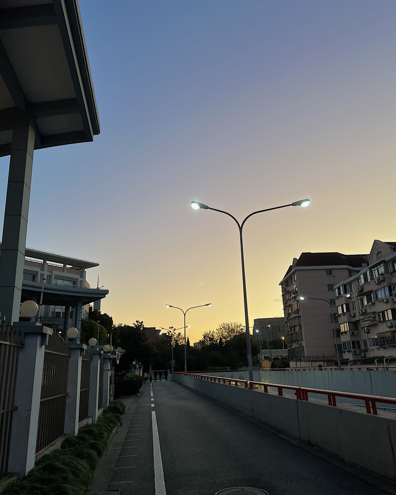
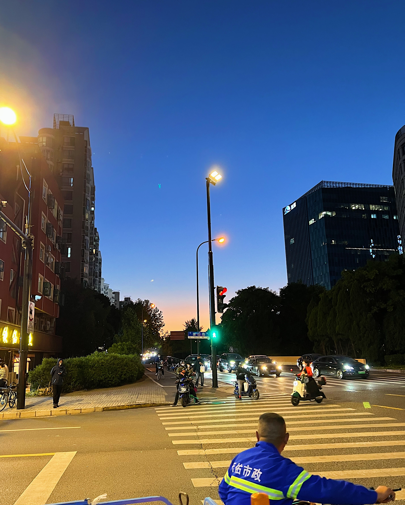
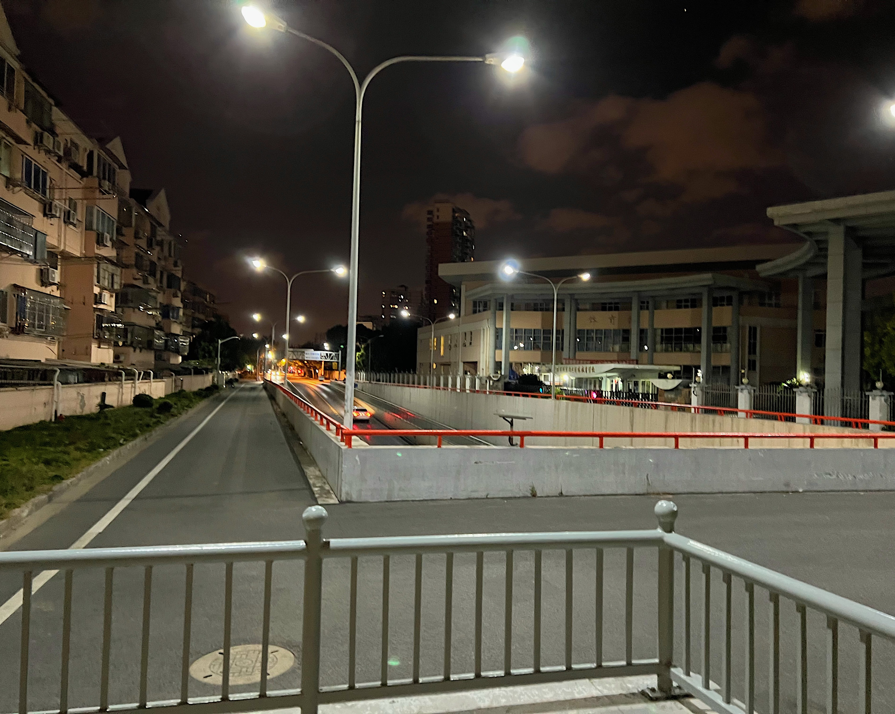
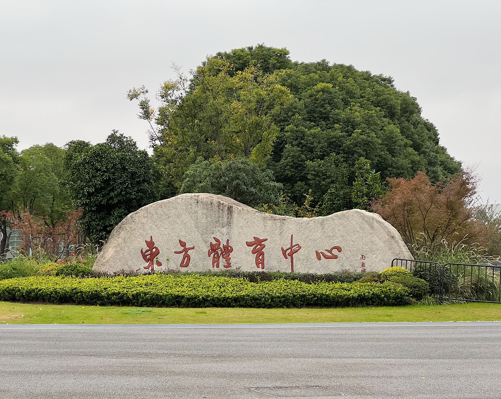

22-11-22
通常，我会在4点半抵达复旦，欣赏一下那个酒红色的地铁站，然后不紧不慢地往正门走，因为我知道她肯定还没到。
我不记得这是第几次接她回家，但我感到这个学校与我越来越熟络了。除了这个学校在繁华的市区外，它和交大似乎并无什么区别，一样的内卷，一样的喊着“硬撑罢了”的大学生们。不过，这个学校的门口会走出我心爱的女孩。有时她会从正门走出，有时她会从南1门走出，有时她会东门走出。
在我和她拥抱的时候，身边会走过熙熙攘攘的学生。我接过她的玫红色书包，把它反背在胸前，听她讲今天发生的事。她每次都很疲惫，但是每次都在努力假装不累，或许这就是她的最温柔之处吧。
我喜欢和她住酒店，不仅是因为酒店有大床可以睡，我把这看成对未来可能的同居生活的模拟。吃早饭时，我可以了解她早餐偏好的口味；睡觉时，我可以知道她打不打呼噜，起不起夜；我可以明白她出门前要做多少工作，这样下次她约会迟到时，我在心里就不会怪她。我观察到她生活的种种习惯，这样在以后同居的时候我才能游刃有余。不得不说，她真是一个适合朝暮相处的对象——安静、爱干净、不打呼噜，除了她喜欢把我挤下床之外，她就是完美的。
我们之间似乎变得无话不说。我们之间的关系，在以月为单位悄悄变化着。我们的见面趋于日常化，每周一次的约会频率精准接住了我心中那溢出的爱。我越发感觉我们之间的交流变得轻松、简单，这对于我们来说是一件好事——我不再拘束于向她表达自己的想法，所以那些微不足道的不满可以在一开始就被发现。结果就是我很难再生闷气，而她有情绪时我也不吝惜自己的关心，对于我这个喜欢内耗的人真是太友好了！
我们最近，吃了不少东西。让我数数……blueglass、炒酸奶、花椒鱼、萨利亚、必胜客、栗子、章鱼小丸子、蛋挞、小馄饨、各种各样的冰激凌，有苹果味儿的，草莓味儿的，巧克力味儿的，半巧克力半香草味儿的，黑巧克力味儿的……她喜欢吃甜甜的，我喜欢吃富含蛋白质的。我平时不进任何甜品，但是如果是她的邀请我不会拒绝。他们说肠道菌群要足够多样性才能维持健康，所以我想吃点甜品应该也不是什么坏事。
在月色和路灯下约会的体验是很不同的。我很喜欢羽山路下立交的那个区域，那是一个又长又空旷的小坡。黄昏时，我们沿着坡往上爬，可以看到漂亮的夕阳和晚霞；回家路上，平整的柏油马路遇上广阔的黑夜，周围安静得不可思议。这个地方真的太适合我们了，或许是因为这个地方充满了我们的回忆——水族馆之旅的最后，我们就是在这里下的出租车。
骑车时看到的漂亮晚霞
缓缓上坡中
等红灯时看到的漂亮晚霞
回家路上
前滩之旅的最后一天
评论区